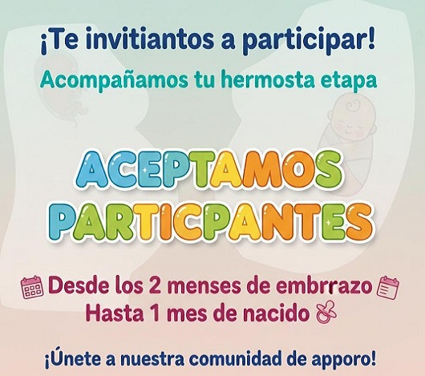
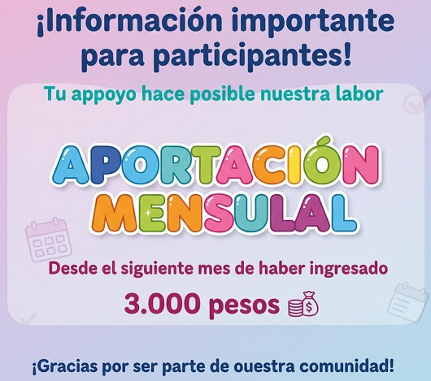

Preguntas
Elige el tema que te interesa:
- ¿Qué trabajo realizan?
- ¿Desde qué edad aceptan a mi hijo?
- ¿Cada cuánto hay inscripciones?
- ¿Deben dar un aporte los padres?
- ¿Tengo que vivir cerca del CDI?
- ¿Hasta qué edad está mi hijo?
- ¿Qué pasa si me voy de la ciudad?
- ¿Debo ir a la Iglesia para que acepten a mi hijo?
- ¿Qué debo hacer para que mi hijo permanezca en el CDI?
- ¿Puedo hablar con los padrinos de mi hijo?
¿Qué trabajo de Desarrollo Integral realizamos?
Nuestro Centro de Desarrollo Integral (CDI) se dedica a la Atención Integral a la Primera Infancia (mujeres gestantes, lactantes y niños de 0 a 5 años), garantizando el desarrollo pleno y armónico de cada participante a través de un modelo pedagógico basado en los cuatro pilares fundamentales del ser humano: Físico, Cognitivo, Socioemocional y Espiritual.
El servicio es de carácter preventivo y promotor de derechos, e incluye acciones coordinadas con un equipo interdisciplinario (pedagogos, nutricionistas, médicos y psicosociales).
1. Ejes de Desarrollo Integral:
- Área Física / Salud y Nutrición:
- Cuidado y Bienestar: Acompañamiento en el cumplimiento de la Ruta Integral de Atenciones (RIA) en salud y nutrición.
- Monitoreo: Seguimiento periódico del estado nutricional y antropométrico de los niños y las gestantes.
- Atención Médica: Articulación para valoración pediátrica, desparasitación y tamizaje en salud.
- Soporte Alimentario: Suministro diario de refuerzo nutricional (refrigerio y/o almuerzo balanceado) y entrega de suplementos alimentarios.
- Área Cognitiva / Educación Inicial:
- Experiencias Pedagógicas: Implementación de actividades intencionadas basadas en las actividades rectoras de la primera infancia (Juego, Literatura, Arte y Exploración del Medio).
- Desarrollo de Habilidades: Promoción del lenguaje, el pensamiento lógico-matemático y el desarrollo de la autonomía para la preparación escolar.
- Área Socioemocional / Familia y Crianza:
- Acompañamiento Psicosocial: Fortalecimiento de pautas de crianza respetuosa, manejo de emociones y fomento de lazos afectivos fuertes.
- Protección de Derechos: Promoción de la participación activa de las familias y la creación de ambientes protectores, identificando y gestionando alertas de riesgo.
- Área Espiritual / Formación en Valores:
- Construcción de Carácter: Inclusión de devocionales, principios éticos y valores (respeto, amor, solidaridad) adaptados a la edad, fomentando la construcción de una base moral y espiritual.
2. Cobertura del Servicio:
- Mujeres Gestantes y Madres Lactantes: Sesiones grupales e individuales de acompañamiento pre y postnatal, enfocadas en la lactancia materna exclusiva y el vínculo afectivo.
- Niños y Niñas (0 a 5 años): Atención integral en el centro o mediante acompañamiento familiar, según el modelo de atención aplicado.
¿Desde qué edad aceptan a mi hijo?
Nuestro enfoque principal es la atención a la Primera Infancia en su fase inicial, abarcando desde los 2 meses de gestación (a través del programa de acompañamiento prenatal) hasta el 1 mes de vida (acompañamiento posparto y lactancia).
Adicionalmente, y dependiendo de las asignaciones de cupos específicas (cuotas), ofrecemos apoyo a la población de 3 a 5 años en modalidades esporádicas. Sin embargo, nuestro pilar fundamental es el acompañamiento integral a la mujer gestante, el bebé y su familia durante el inicio crítico de la vida.

¿Cada cuánto hay inscripciones?
El proceso de inscripción es altamente selectivo y depende de la asignación de cupos por parte de las entidades financiadoras.
Debido a que los cupos son muy limitados y se abren de manera esporádica (pocas veces al año), no contamos con un calendario fijo. La disponibilidad se concentra principalmente en la atención a gestantes y recién nacidos.
Si deseas postularte, te recomendamos:
- Prioridad en la Solicitud: Pregunta directamente en el CDI por el proceso de focalización para la población de mujeres gestantes, ya que esta es nuestra población objetivo principal.
- Mantente Informado: Consulta nuestras redes sociales o acude directamente a nuestras instalaciones para conocer la próxima fecha de apertura de cupos, la cual se anuncia con poca antelación.
- Documentación: Ten lista la documentación requerida para agilizar el proceso si se abre una convocatoria.
¿Deben dar un aporte los padres?
Sí. Nuestro programa, aunque gestionado sin fines de lucro, requiere la colaboración activa y un aporte de cuota de participación por parte de los padres:
- Aporte Mensual Fijo: Se solicita una cuota de $3.000 (tres mil pesos) por participante, la cual contribuye al sostenimiento y la mejora de los servicios.
- Aporte en Medicina: En caso de que se suministre algún medicamento al niño o niña como parte de la atención de salud (por ejemplo, vitaminas, desparasitantes, etc.), se solicita a los padres contribuir con el 20% del valor total de dicha medicina.
- Compromiso Activo: Más allá del aporte económico, la contribución más importante es el compromiso de asistencia del niño/a y la participación activa de los padres en los encuentros educativos, talleres y actividades de formación familiar que se programen.

¿Tengo que vivir cerca del CDI?
Vivir cerca del CDI no es un requisito obligatorio. Sin embargo, la participación en el programa exige un compromiso estricto y riguroso por parte de los padres y cuidadores.
Es fundamental que la familia garantice:
- Asistencia y Puntualidad Constante: El niño o la gestante deben asistir puntualmente a todos los encuentros grupales para asegurar el desarrollo de los contenidos.
- Disponibilidad para el Proyecto: La familia debe estar totalmente dispuesta a acercarse al CDI o al lugar de encuentro comunitario cada vez que el equipo lo solicite para talleres, valoraciones, reuniones o actividades especiales.
El incumplimiento de este compromiso de participación y asistencia puede llevar a la pérdida del cupo, ya que la continuidad es esencial para la calidad de la atención integral.
¿Hasta qué edad está mi hijo en el programa?
La permanencia en nuestro programa puede extenderse hasta los 22 años de edad.
Sin embargo, es crucial entender que esta extensión está sujeta a la continuidad en el cumplimiento de los siguientes requisitos:
- Cumplimiento de Requisitos de Elegibilidad: Que el participante y la familia sigan cumpliendo con los criterios socioeconómicos y de focalización del proyecto.
- Asistencia Estricta: Mantener una asistencia constante y obligatoria a todas las actividades programadas.
- Responsabilidad con el Proyecto: Mostrar un compromiso activo con la metodología, las pautas de crianza, los aportes (si aplican) y la participación en las reuniones y talleres.
El incumplimiento de estos puntos puede resultar en la exclusión del programa, independientemente de la edad.
¿Qué pasa si me voy de la ciudad o me mudo?
Si la familia se muda de la ciudad o del área de cobertura del proyecto, el procedimiento es el siguiente:
- Aviso Inmediato: Es obligatorio notificar al equipo del CDI tan pronto se tome la decisión de trasladarse.
- Período de Espera/Evaluación: En casos de traslados temporales o por motivos específicos, el proyecto puede otorgar un período de espera limitado mientras se evalúa la situación y la posibilidad de mantener el cupo.
- Salida Definitiva: Si la familia decide residir permanentemente fuera del área de cobertura y no regresa dentro del plazo establecido, lamentablemente se debe proceder con una "Salida No Planeada". Esto implica la pérdida definitiva del cupo para el niño o la gestante, siguiendo las políticas de desvinculación del programa y del socio estratégico (si aplica, como el ICBF).
Recomendamos siempre comunicarse de inmediato con el equipo psicosocial para evaluar la situación particular.
¿Debo ir a la Iglesia para que acepten a mi hijo?
La asistencia a la iglesia no es un requisito obligatorio para la aceptación de tu hijo en el CDI.
Sin embargo, dado que nuestro programa de desarrollo integral incluye un fuerte pilar de formación espiritual cristiana, consideramos esencial que la familia:
- Tome una Decisión de Fe: Es importante que tomen la decisión de aceptar a Jesús como su Único y Suficiente Salvador. Creemos que al hacerlo, ustedes y sus hijos estarán guiados, protegidos y bendecidos por Él.
- Participación Espiritual: Animamos a las familias a participar activamente en las enseñanzas y devocionales que se imparten, ya que estos principios son fundamentales para la construcción de valores y el carácter.
Versículo para la Familia: "Cree en el Señor Jesús, y serás salvo, tú y tu casa." (Hechos 16:31)
¿Qué debo hacer para que mi hijo permanezca en el CDI?
La permanencia en el programa está directamente ligada al cumplimiento continuo de una serie de compromisos fundamentales por parte del participante y su familia:
Compromisos Esenciales:
- Asistencia y Participación: Ser absolutamente responsable con la asistencia puntual a todos los encuentros y actividades programadas por el proyecto.
- Respeto y Conducta: Asistir al proyecto con una actitud de respeto hacia el equipo de trabajo, otros niños, familias y las instalaciones.
- Formación Académica (si aplica por edad): En el caso de los niños de mayor edad que son incluidos esporádicamente (3 a 5 años o más), deben estar estudiando en un centro educativo formal.
- Relaciones Interpersonales: Mantener una buena relación y comunicación respetuosa con sus compañeros y maestros.
- Salud y Bienestar: No tener ni adquirir ningún vicio o conducta que afecte negativamente su salud física, emocional o su desarrollo integral.
- Apoyo Familiar: Apoyar activamente a su hijo o hija en su crecimiento y orientarlo firmemente hacia una vida de principios y valores.
El incumplimiento de cualquiera de estas condiciones es motivo de revisión por el equipo psicosocial y puede resultar en la desvinculación del programa.
¿Puedo hablar con los padrinos de mi hijo?
Sí, la comunicación con los patrocinadores (padrinos) de tu hijo es posible, pero se realiza siguiendo estrictos protocolos de seguridad y privacidad:
- Medio Principal: La comunicación se gestiona únicamente mediante cartas. El equipo del CDI se encarga de facilitar el intercambio seguro de mensajes.
- Visitas: Puedes conocer a los padrinos si ellos organizan una visita presencial al proyecto, la cual debe ser coordinada y aprobada previamente por la administración del CDI.
- Restricción Estricta: Está estrictamente prohibido el contacto directo con los patrocinadores a través de redes sociales, correos electrónicos o llamadas telefónicas. Esta medida garantiza la protección y privacidad tanto de los niños como de los padrinos.
El equipo del CDI es el intermediario oficial para todas las comunicaciones.